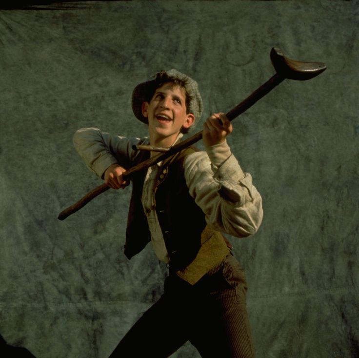

Rooftop Solitude • Longing for Santa Fe
0:45
Lead Characters
Rooftop Escape
Alan Menken & Jack Feldman (2012)
Jack Kelly
Jeremy Jordan

Crutchie
Andrew Keenan-Bolger
The "I Want" Song
Notice how the song lays bare Jack's vulnerability—he acts tough for the newsboys, but longs for open space and peace.
Powerful Broadway Belting
Listen to how Jeremy Jordan shifts from conversational storytelling into soaring, resonant high tenor notes.
Steel Tower Staging
Watch how the three-story metal scaffoldings represent both the gritty trap of New York and Jack's ladder to the sky.